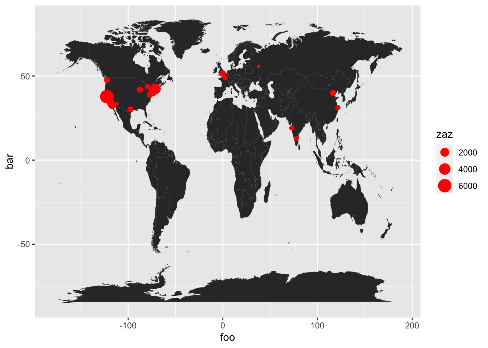
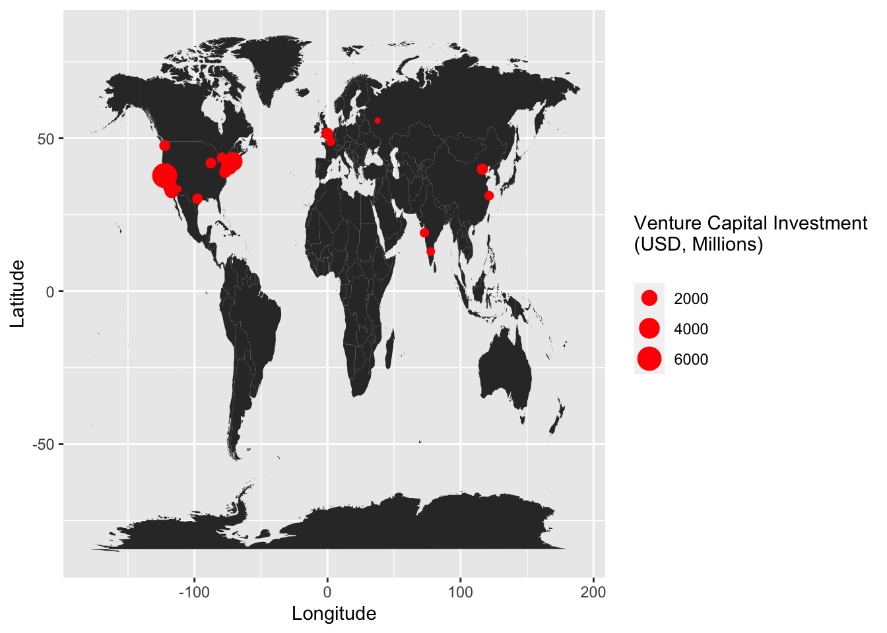
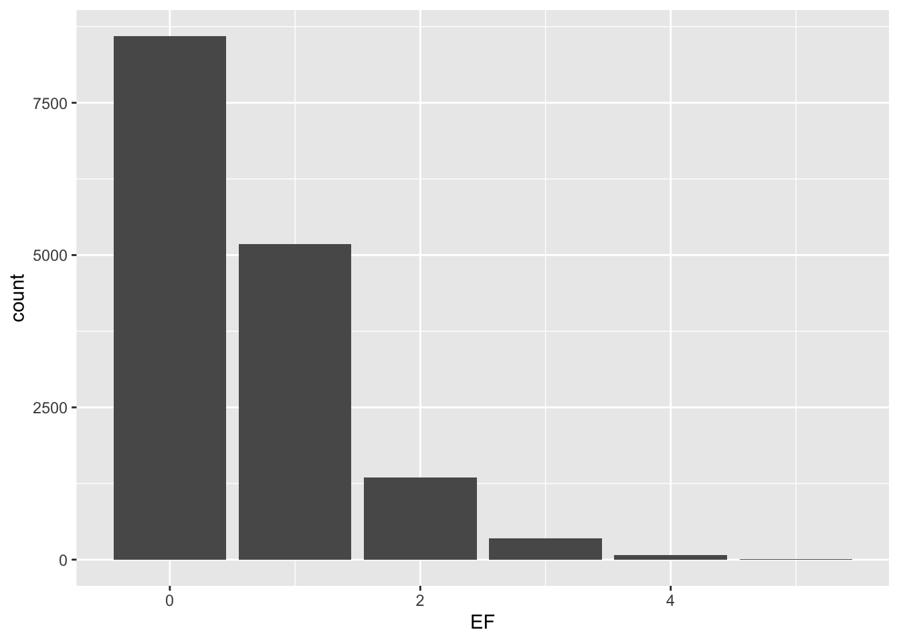
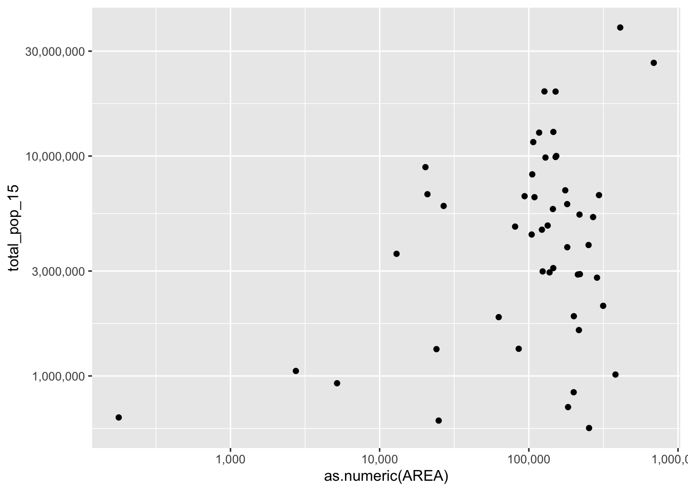
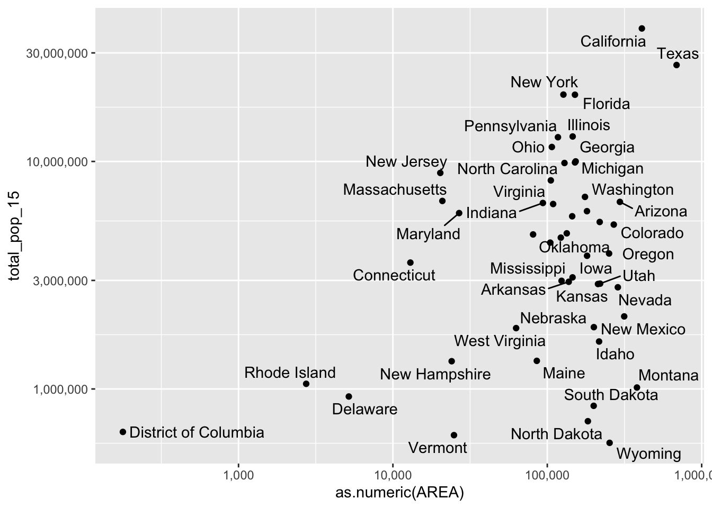

Thursday September 1, 2022
“Good coding style is like correct punctuation: you can manage without it, butitsuremakesthingseasiertoread.” — Hadley Wickham
Today
- Making graphs
Working with data frames is part of the iterative cycle of data science, along with visualizing, and modeling.
The iterative cycle of data science:
- Generate questions about our data.
- Look for answers by visualizing and modeling the data after the data are in suitably arranged data frames.
- Use what we learn to refine our questions and/or ask new ones.
Questions are tools to guide your investigation. When you ask a question, the question focuses your attention on a specific part of the data set and helps you decide what to do.
For additional practice working with data frames using functions from the {tidyverse} set of packages.
- See http://r4ds.had.co.nz/index.html
- Cheat sheets http://rstudio.com/cheatsheets
Before moving on, let’s consider another data frame. The data frame contains observations on Palmer penguins and is available from https://education.rstudio.com/blog/2020/07/palmerpenguins-cran/.
You import the data frame using the read_csv() function.
loc <- "https://raw.githubusercontent.com/allisonhorst/palmerpenguins/master/inst/extdata/penguins.csv"
penguins <- readr::read_csv(file = loc)## Rows: 344 Columns: 8
## ── Column specification ────────────────────────────────────────────────────────
## Delimiter: ","
## chr (3): species, island, sex
## dbl (5): bill_length_mm, bill_depth_mm, flipper_length_mm, body_mass_g, year
##
## ℹ Use `spec()` to retrieve the full column specification for this data.
## ℹ Specify the column types or set `show_col_types = FALSE` to quiet this message.penguins## # A tibble: 344 × 8
## species island bill_length_mm bill_depth_mm flipper_length_mm body_mass_g
## <chr> <chr> <dbl> <dbl> <dbl> <dbl>
## 1 Adelie Torgersen 39.1 18.7 181 3750
## 2 Adelie Torgersen 39.5 17.4 186 3800
## 3 Adelie Torgersen 40.3 18 195 3250
## 4 Adelie Torgersen NA NA NA NA
## 5 Adelie Torgersen 36.7 19.3 193 3450
## 6 Adelie Torgersen 39.3 20.6 190 3650
## 7 Adelie Torgersen 38.9 17.8 181 3625
## 8 Adelie Torgersen 39.2 19.6 195 4675
## 9 Adelie Torgersen 34.1 18.1 193 3475
## 10 Adelie Torgersen 42 20.2 190 4250
## # … with 334 more rows, and 2 more variables: sex <chr>, year <dbl>The observations are 344 individual penguins each described by species (Adelie, Chinstrap, Gentoo), where it was found (island name), length of bill (mm), depth of bill (mm), body mass (g), male or female, and year.
Each penguin belongs to one of three species. To see how many of the 344 penguins are in each species you use the table() function.
table(penguins$species)##
## Adelie Chinstrap Gentoo
## 152 68 124There are 152 Adelie, 68 Chinstrap, and 124 Gentoo penguins.
To create a data frame that includes only the female penguins you type
( df <- penguins |>
dplyr::filter(sex == "female") )## # A tibble: 165 × 8
## species island bill_length_mm bill_depth_mm flipper_length_mm body_mass_g
## <chr> <chr> <dbl> <dbl> <dbl> <dbl>
## 1 Adelie Torgersen 39.5 17.4 186 3800
## 2 Adelie Torgersen 40.3 18 195 3250
## 3 Adelie Torgersen 36.7 19.3 193 3450
## 4 Adelie Torgersen 38.9 17.8 181 3625
## 5 Adelie Torgersen 41.1 17.6 182 3200
## 6 Adelie Torgersen 36.6 17.8 185 3700
## 7 Adelie Torgersen 38.7 19 195 3450
## 8 Adelie Torgersen 34.4 18.4 184 3325
## 9 Adelie Biscoe 37.8 18.3 174 3400
## 10 Adelie Biscoe 35.9 19.2 189 3800
## # … with 155 more rows, and 2 more variables: sex <chr>, year <dbl>To create a data frame that includes only penguins that are not of species Adalie you type
( df <- penguins |>
dplyr::filter(species != "Adelie") )## # A tibble: 192 × 8
## species island bill_length_mm bill_depth_mm flipper_length_mm body_mass_g
## <chr> <chr> <dbl> <dbl> <dbl> <dbl>
## 1 Gentoo Biscoe 46.1 13.2 211 4500
## 2 Gentoo Biscoe 50 16.3 230 5700
## 3 Gentoo Biscoe 48.7 14.1 210 4450
## 4 Gentoo Biscoe 50 15.2 218 5700
## 5 Gentoo Biscoe 47.6 14.5 215 5400
## 6 Gentoo Biscoe 46.5 13.5 210 4550
## 7 Gentoo Biscoe 45.4 14.6 211 4800
## 8 Gentoo Biscoe 46.7 15.3 219 5200
## 9 Gentoo Biscoe 43.3 13.4 209 4400
## 10 Gentoo Biscoe 46.8 15.4 215 5150
## # … with 182 more rows, and 2 more variables: sex <chr>, year <dbl>To create a data frame containing only penguins that weigh more than 6000 grams you type
( df <- penguins |>
dplyr::filter(body_mass_g > 6000) )## # A tibble: 2 × 8
## species island bill_length_mm bill_depth_mm flipper_length_… body_mass_g sex
## <chr> <chr> <dbl> <dbl> <dbl> <dbl> <chr>
## 1 Gentoo Biscoe 49.2 15.2 221 6300 male
## 2 Gentoo Biscoe 59.6 17 230 6050 male
## # … with 1 more variable: year <dbl>To create a data frame with female penguins that have flippers longer than 220 mm we type
( df <- penguins |>
dplyr::filter(flipper_length_mm > 220 &
sex == "female") )## # A tibble: 1 × 8
## species island bill_length_mm bill_depth_mm flipper_length_… body_mass_g sex
## <chr> <chr> <dbl> <dbl> <dbl> <dbl> <chr>
## 1 Gentoo Biscoe 46.9 14.6 222 4875 fema…
## # … with 1 more variable: year <dbl>To create a data frame containing rows where the bill length value is NOT missing.
( df <- penguins |>
dplyr::filter(!is.na(bill_length_mm)) )## # A tibble: 342 × 8
## species island bill_length_mm bill_depth_mm flipper_length_mm body_mass_g
## <chr> <chr> <dbl> <dbl> <dbl> <dbl>
## 1 Adelie Torgersen 39.1 18.7 181 3750
## 2 Adelie Torgersen 39.5 17.4 186 3800
## 3 Adelie Torgersen 40.3 18 195 3250
## 4 Adelie Torgersen 36.7 19.3 193 3450
## 5 Adelie Torgersen 39.3 20.6 190 3650
## 6 Adelie Torgersen 38.9 17.8 181 3625
## 7 Adelie Torgersen 39.2 19.6 195 4675
## 8 Adelie Torgersen 34.1 18.1 193 3475
## 9 Adelie Torgersen 42 20.2 190 4250
## 10 Adelie Torgersen 37.8 17.1 186 3300
## # … with 332 more rows, and 2 more variables: sex <chr>, year <dbl>Note that this filtering will keep rows with other column values missing values but there will be no penguins where the bill_length value is NA.
Finally, to compute the average bill length for each species.
penguins |>
dplyr::group_by(species) |>
dplyr::summarize(AvgBL = mean(bill_length_mm, na.rm = TRUE))## # A tibble: 3 × 2
## species AvgBL
## <chr> <dbl>
## 1 Adelie 38.8
## 2 Chinstrap 48.8
## 3 Gentoo 47.5Making graphs
The {ggplot2} package is a popular graphics tool among data scientists (e.g., New York Times and 538). Functionality is built on principles of good data visualization.
- Mapping data to aesthetics
- Layering
- Building plots step by step
You make the functions available to your current working directory by typing
library(ggplot2)Map data to aesthetics
Consider the following numeric vectors (foo, bar and zaz). Create a data frame df using the data.frame() function.
foo <- c(-122.419416,-121.886329,-71.05888,-74.005941,-118.243685,-117.161084,-0.127758,-77.036871,
116.407395,-122.332071,-87.629798,-79.383184,-97.743061,121.473701,72.877656,2.352222,
77.594563,-75.165222,-112.074037,37.6173)
bar <- c(37.77493,37.338208,42.360083,40.712784,34.052234,32.715738,51.507351,38.907192,39.904211,
47.60621,41.878114,43.653226,30.267153,31.230416,19.075984,48.856614,12.971599,39.952584,
33.448377,55.755826)
zaz <- c(6471,4175,3144,2106,1450,1410,842,835,758,727,688,628,626,510,497,449,419,413,325,318)
df <- data.frame(foo, bar, zaz)
head(df)## foo bar zaz
## 1 -122.41942 37.77493 6471
## 2 -121.88633 37.33821 4175
## 3 -71.05888 42.36008 3144
## 4 -74.00594 40.71278 2106
## 5 -118.24368 34.05223 1450
## 6 -117.16108 32.71574 1410To make a scatter plot you use the ggplot() function. Note that the package name is {ggplot2} but the function is ggplot() (without the 2).
Inside the ggplot() function you specify the data frame with the data = argument. You also specify what columns from the data frame are to be mapped to what ‘aesthetics’ with the aes() function using the mapping = argument. The aes() function is nested inside the ggplot() function or inside a layer function.
For a scatter plot the aesthetics must include the x and y coordinates at a minimum, and for this example they are in the columns labeled foo and bar respectively.
Then to render the scatter plot you include the function geom_point() as a layer with the + symbol. Numeric values are specified using the arguments x = and y = in the aes() function and are rendered as points on a plot.
ggplot(data = df,
mapping = aes(x = foo, y = bar)) +
geom_point()
You map data values to aesthetic attributes. The points in the scatter plot are geometric objects that get drawn. In {ggplot2} lingo, the points are geoms. More specifically, the points are point geoms that are denoted syntactically with the function geom_point().
All geometric objects have aesthetic attributes (aesthetics):
- x-position
- y-position
- color
- size
- transparency
You create a mapping between variables in your data frame and the aesthetic attributes of geometric objects. In the scatter plot you mapped foo to the x-position aesthetic and bar to the y-position aesthetic. This may seem trivial foo is the x-axis and bar is on the y-axis. You certainly can do that in Excel.
Here there is a deeper structure. Theoretically, geometric objects (i.e., the things you draw in a plot, like points) don’t just have attributes like position. They have a color, size, etc.
For example here you map a new variable to the size aesthetic.
ggplot(data = df,
mapping = aes(x = foo, y = bar)) +
geom_point(mapping = aes(size = zaz))
You changed the scatter plot to a bubble chart by mapping a new variable to the size aesthetic. Any visualization can be deconstructed into geom specifications and a mapping from data to the aesthetic attributes of the geometric objects.
Build plots in layers
The principle of layering is important. To create good visualizations you often need to:
- Plot multiple datasets, or
- Plot a dataset with additional contextual information contained in a second dataset, or
- Plot summaries or statistical transformations over the raw data
Let’s modify the bubble chart by getting additional data and plotting it as a new layer below the bubbles. First get the data from the {maps} package using the map_data() function and specifying the name of the map (here "World") and assigning it to a data frame with the name df2.
df2 <- map_data(map = "world") |>
dplyr::glimpse()## Rows: 99,338
## Columns: 6
## $ long <dbl> -69.89912, -69.89571, -69.94219, -70.00415, -70.06612, -70.0…
## $ lat <dbl> 12.45200, 12.42300, 12.43853, 12.50049, 12.54697, 12.59707, …
## $ group <dbl> 1, 1, 1, 1, 1, 1, 1, 1, 1, 1, 2, 2, 2, 2, 2, 2, 2, 2, 2, 2, …
## $ order <int> 1, 2, 3, 4, 5, 6, 7, 8, 9, 10, 12, 13, 14, 15, 16, 17, 18, 1…
## $ region <chr> "Aruba", "Aruba", "Aruba", "Aruba", "Aruba", "Aruba", "Aruba…
## $ subregion <chr> NA, NA, NA, NA, NA, NA, NA, NA, NA, NA, NA, NA, NA, NA, NA, …Plot the new data as a new layer underneath the bubbles.
ggplot(data = df,
aes(x = foo, y = bar)) +
geom_polygon(data = df2,
mapping = aes(x = long, y = lat, group = group)) +
geom_point(mapping = aes(size = zaz), color = "red")
This is the same bubble chart but now with a new layer added. You changed the bubble chart into a new visualization called a “dot distribution map,” which is more insightful and visually interesting.
The bubble chart is a modified scatter plot and the dot distribution map is a modified bubble chart.
You used two of the data visualization principles (mapping & layering) to build this plot:
- To create the scatter plot, you mapped
footo the x-aesthetic and mappedbarto the y-aesthetic - To create the bubble chart, you mapped a
zazto the size-aesthetic - To create the dot distribution map, you added a layer of polygon data under the bubbles.
Iteration (step by step)
The third principle is about process. The graphing process begins with mapping and layering but ends with iteration when you add layers that modify scales, legends, colors, etc. The syntax of ggplot layerability enables and rewards iteration.
Instead of plotting the result of the above code for making a bubble chart, assign the result to an object called p1. Coping/paste the code from above then include the assignment operator p1 <-.
p1 <- ggplot(data = df,
mapping = aes(x = foo, y = bar)) +
geom_polygon(data = df2,
mapping = aes(x = long, y = lat, group = group)) +
geom_point(aes(size = zaz), color = "red")Now modify the axes labels saving the new plot to an object called p2.
( p2 <- p1 + xlab("Longitude") + ylab("Latitude") )
Next modify the scale label.
p2 + scale_size_continuous(name = "Venture Capital Investment\n(USD, Millions)\n")
Of course you can do this all together with
p1 + xlab("Longitude") +
ylab("Latitude") +
scale_size_continuous(name = "Venture Capital Investment\n(USD, Millions)\n")
The facet_wrap() function is a layer to iterate (repeat) the entire plot conditional on another variable. It is like the dplyr::group_by() function in the data grammar.
US tornadoes
Consider the tornado records in the file Tornadoes.csv. Import the data using the readr::read_csv() function then create new columns called Year, Month and EF using the dplyr::mutate() function.
( Torn.df <- readr::read_csv(file = here::here("data", "Tornadoes.csv")) |>
dplyr::mutate(Year = yr,
Month = as.integer(mo),
EF = mag) )## Rows: 65162 Columns: 29
## ── Column specification ────────────────────────────────────────────────────────
## Delimiter: ","
## chr (4): mo, dy, st, stf
## dbl (23): om, yr, tz, stn, mag, inj, fat, loss, closs, slat, slon, elat, el...
## date (1): date
## time (1): time
##
## ℹ Use `spec()` to retrieve the full column specification for this data.
## ℹ Specify the column types or set `show_col_types = FALSE` to quiet this message.## # A tibble: 65,162 × 32
## om yr mo dy date time tz st stf stn mag inj
## <dbl> <dbl> <chr> <chr> <date> <time> <dbl> <chr> <chr> <dbl> <dbl> <dbl>
## 1 1 1950 01 03 1950-01-03 11:00 3 MO 29 1 3 3
## 2 2 1950 01 03 1950-01-03 11:55 3 IL 17 2 3 3
## 3 3 1950 01 03 1950-01-03 16:00 3 OH 39 1 1 1
## 4 4 1950 01 13 1950-01-13 05:25 3 AR 5 1 3 1
## 5 5 1950 01 25 1950-01-25 19:30 3 MO 29 2 2 5
## 6 6 1950 01 25 1950-01-25 21:00 3 IL 17 3 2 0
## 7 7 1950 01 26 1950-01-26 18:00 3 TX 48 1 2 2
## 8 8 1950 02 11 1950-02-11 13:10 3 TX 48 2 2 0
## 9 9 1950 02 11 1950-02-11 13:50 3 TX 48 3 3 12
## 10 10 1950 02 11 1950-02-11 21:00 3 TX 48 4 2 5
## # … with 65,152 more rows, and 20 more variables: fat <dbl>, loss <dbl>,
## # closs <dbl>, slat <dbl>, slon <dbl>, elat <dbl>, elon <dbl>, len <dbl>,
## # wid <dbl>, ns <dbl>, sn <dbl>, sg <dbl>, f1 <dbl>, f2 <dbl>, f3 <dbl>,
## # f4 <dbl>, fc <dbl>, Year <dbl>, Month <int>, EF <dbl>Next create a data frame (df) containing the number of tornadoes by year for the state of Kansas.
( df <- Torn.df |>
dplyr::filter(st == "KS") |>
dplyr::group_by(Year) |>
dplyr::summarize(nT = dplyr::n()) )## # A tibble: 70 × 2
## Year nT
## <dbl> <int>
## 1 1950 30
## 2 1951 77
## 3 1952 19
## 4 1953 29
## 5 1954 68
## 6 1955 96
## 7 1956 57
## 8 1957 63
## 9 1958 49
## 10 1959 65
## # … with 60 more rowsThen use the functions from the {ggplot2} package to plot the number of tornadoes by year using lines to connect the values in order of the variable on the x-axis.
ggplot(data = df,
mapping = aes(x = Year, y = nT)) +
geom_line()
Note: In the early production stage of research, I like to break the code into steps as above: (1) Import the data, (2) manipulate the data, and (3) plot the data. It is easier to document but it also introduces the potential for mistakes because of the intermediary objects in the environment (e.g., Torn.df, df).
Below you bring together the above code to create the time series of Kansas tornado frequency without producing intermediary objects.
readr::read_csv(file = here::here("data", "Tornadoes.csv")) |>
dplyr::mutate(Year = yr,
Month = as.integer(mo),
EF = mag) |>
dplyr::filter(st == "KS") |>
dplyr::group_by(Year) |>
dplyr::summarize(nT = dplyr::n()) |>
ggplot(mapping = aes(x = Year, y = nT)) +
geom_line() +
geom_point()Recall that the group_by() function allows you to repeat an operation depending on the value (or level) of some variable. For example to count the number of tornadoes by EF damage rating since 2007 and ignoring missing ratings
Torn.df |>
dplyr::filter(Year >= 2007, EF != -9) |>
dplyr::group_by(EF) |>
dplyr::summarize(Count = dplyr::n()) ## # A tibble: 6 × 2
## EF Count
## <dbl> <int>
## 1 0 8597
## 2 1 5180
## 3 2 1354
## 4 3 354
## 5 4 74
## 6 5 9The result is a table listing the number of tornadoes grouped by EF rating.
Instead of printing the table, you create a bar chart using the geom_col() function.
Torn.df |>
dplyr::filter(Year >= 2007, EF != -9) |>
dplyr::group_by(EF) |>
dplyr::summarize(Count = dplyr::n()) |>
ggplot(mapping = aes(x = EF, y = Count)) +
geom_col()
The geom_bar() function counts the number of cases at each x position so you don’t need the group_by() and summarize() functions.
Torn.df |>
dplyr::filter(Year >= 2007, EF != -9) |>
ggplot(mapping = aes(x = EF)) +
geom_bar()
Improve the bar chart and to make it ready for publication.
Torn.df |>
dplyr::filter(Year >= 2007, EF != -9) |>
dplyr::group_by(EF) |>
dplyr::summarize(Count = dplyr::n()) |>
ggplot(mapping = aes(x = factor(EF), y = Count, fill = Count)) +
geom_bar(stat = "identity") +
xlab("EF Rating") +
ylab("Number of Tornadoes") +
scale_fill_continuous(low = 'green', high = 'orange') +
geom_text(aes(label = Count), vjust = -.5, size = 3) +
theme_minimal() +
theme(legend.position = 'none') 
You create a set of plots with the facet_wrap() function. Here you create a set of bar charts showing the frequency of tornadoes by EF rating for each year in the data set since 2004.
You add the function after the geom_bar() layer and use the formula syntax (~ Year) inside the parentheses. You interpret the syntax as “plot bar charts conditioned on the variable year.”
Torn.df |>
dplyr::filter(Year >= 2004, EF != -9) |>
ggplot(mapping = aes(x = factor(EF))) +
geom_bar() +
facet_wrap(~ Year)
Hot days in Tallahassee and Las Vegas
The data are daily weather observations from the Tallahassee International Airport.
Import the data.
loc <- "http://myweb.fsu.edu/jelsner/temp/data/TLH_Daily1940-2021.csv"
TLH.df <- readr::read_csv(file = loc)## Rows: 29997 Columns: 7
## ── Column specification ────────────────────────────────────────────────────────
## Delimiter: ","
## chr (2): STATION, NAME
## dbl (4): TAVG, TMAX, TMIN, TOBS
## date (1): DATE
##
## ℹ Use `spec()` to retrieve the full column specification for this data.
## ℹ Specify the column types or set `show_col_types = FALSE` to quiet this message.The variables of interest are the daily high (and low) temperature in the column labeled TMAX (TMIN). The values are in degrees F.
Rename the columns then select only the date and temperature columns.
TLH.df <- TLH.df |>
dplyr::rename(TmaxF = TMAX,
TminF = TMIN,
Date = DATE) |>
dplyr::select(Date, TmaxF, TminF) |>
dplyr::glimpse()## Rows: 29,997
## Columns: 3
## $ Date <date> 1940-03-01, 1940-03-02, 1940-03-03, 1940-03-04, 1940-03-05, 194…
## $ TmaxF <dbl> 72, 77, 73, 72, 61, 66, 72, 56, 60, 72, 72, 65, 74, 63, 56, 73, …
## $ TminF <dbl> 56, 53, 56, 44, 45, 40, 36, 41, 33, 32, 37, 51, 59, 49, 37, 32, …Q: Based on these data, is it getting hotter in Tallahassee? Let’s compute the annual average high temperature and create a time series graph.
You use the year() function from the {lubridate} package to get a column called Year. Since the data only has values through mid May 2022 you keep all observations with the Year column value less than 2021. You then use the group_by() function to group by Year, and the summarize() function to get the average daily maximum temperature for each year.
df <- TLH.df |>
dplyr::mutate(Year = lubridate::year(Date)) |>
dplyr::filter(Year < 2022) |>
dplyr::group_by(Year) |>
dplyr::summarize(AvgT = mean(TmaxF, na.rm = TRUE)) |>
dplyr::glimpse()## Rows: 82
## Columns: 2
## $ Year <dbl> 1940, 1941, 1942, 1943, 1944, 1945, 1946, 1947, 1948, 1949, 1950,…
## $ AvgT <dbl> 80.45425, 78.78904, 78.95808, 79.18356, 79.24863, 79.43014, 80.30…You now have a data frame with two columns: Year and AvgT (annual average daily high temperature in degrees F). If a day is missing a value it is skipped when computing the average because of the na.rm = TRUE argument in the mean() function.
Next you use functions from the {ggplot2} package to make a time series graph. You specify the x aesthetic as Year and the y aesthetic as the AvgT and include point and line layers.
ggplot(data = df,
mapping = aes(x = Year, y = AvgT)) +
geom_point(size = 3) +
geom_line() +
ylab("Average Annual Temperature in Tallahassee, FL (F)")
You can go directly to the graph without saving the resulting data frame. That is, you pipe |> the resulting data frame after applying the {dplyr} verbs to the ggplot() function. The object in the first argument of the ggplot() function is the result (data frame) from the code above. Here you also add a smooth curve through the set of averages with the geom_smooth() layer.
TLH.df |>
dplyr::mutate(Year = lubridate::year(Date)) |>
dplyr::filter(Year < 2022) |>
dplyr::group_by(Year) |>
dplyr::summarize(AvgT = mean(TmaxF, na.rm = TRUE)) |>
ggplot(mapping = aes(x = Year, y = AvgT)) +
geom_point(size = 3) +
geom_line() +
ylab("Average Annual Temperature in Tallahassee, FL (F)") +
geom_smooth() +
theme_minimal()## `geom_smooth()` using method = 'loess' and formula 'y ~ x'
Q: Is the frequency of extremely hot days increasing over time? Let’s consider a daily high temperature of 100 F and above as extremely hot.
Here you count the number of days at or above 100F using the summarize() function together with the sum() function on the logical operator >=. If a day is missing a temperature, you remove it with the na.rm = TRUE argument in the sum() function.
TLH.df |>
dplyr::mutate(Year = lubridate::year(Date)) |>
dplyr::filter(Year < 2022) |>
dplyr::group_by(Year) |>
dplyr::summarize(N100 = sum(TmaxF >= 100, na.rm = TRUE)) |>
ggplot(mapping = aes(x = Year, y = N100, fill = N100)) +
geom_bar(stat = 'identity') +
scale_fill_continuous(low = 'orange', high = 'red') +
geom_text(aes(label = N100), vjust = 1.5, size = 3) +
scale_x_continuous(breaks = seq(1940, 2020, 10)) +
labs(title = expression(paste("Number of days in Tallahassee, Florida at or above 100", {}^o, " F")),
subtitle = "Last official 100+ day was September 18, 2019",
x = "", y = "") +
# ylab(expression(paste("Number of days in Tallahassee, FL at or above 100", {}^o, " F"))) +
theme_minimal() +
theme(axis.text.x = element_text(size = 11), legend.position = "none")
What does the histogram of daily high temperatures look like?
( gTLH <- ggplot(data = TLH.df,
mapping = aes(x = TmaxF)) +
geom_histogram(binwidth = 1, aes(fill = ..count..)) +
scale_fill_continuous(low = 'green', high = 'blue') +
scale_x_continuous() +
scale_y_continuous() +
ylab("Number of Days") +
xlab(expression(paste("Daily High Temperature in Tallahassee, FL (", {}^o, " F)"))) +
theme_minimal() +
theme(legend.position = "none") )## Warning: Removed 2 rows containing non-finite values (stat_bin).
Q: The most common high temperatures are in the low 90s, but there are relatively few 100+ days. Why?
Compare the histogram of daily high temperatures in Tallahassee with a histogram of daily high temperatures in Las Vegas, Nevada. Here we repeat the code above but for the data frame LVG.df. We then use the operators from the {patchwork} package to plot them side by side.
LVG.df <- readr::read_csv(file = "http://myweb.fsu.edu/jelsner/temp/data/LV_DailySummary.csv",
na = "-9999")## New names:
## * `Measurement Flag` -> `Measurement Flag...8`
## * `Quality Flag` -> `Quality Flag...9`
## * `Source Flag` -> `Source Flag...10`
## * `Time of Observation` -> `Time of Observation...11`
## * `Measurement Flag` -> `Measurement Flag...13`
## * ...## Warning: One or more parsing issues, see `problems()` for details## Rows: 23872 Columns: 16## ── Column specification ────────────────────────────────────────────────────────
## Delimiter: ","
## chr (7): STATION, STATION_NAME, ELEVATION, LATITUDE, LONGITUDE, Source Flag....
## dbl (5): DATE, TMAX, Time of Observation...11, TMIN, Time of Observation...16
## lgl (4): Measurement Flag...8, Quality Flag...9, Measurement Flag...13, Qual...
##
## ℹ Use `spec()` to retrieve the full column specification for this data.
## ℹ Specify the column types or set `show_col_types = FALSE` to quiet this message.LVG.df <- LVG.df |>
dplyr::mutate(TmaxF = round(9/5 * TMAX/10 + 32),
TminF = round(9/5 * TMIN/10 + 32),
Date = as.Date(as.character(DATE),
format = "%Y%m%d")) |>
dplyr::select(Date, TmaxF, TminF)
gLVG <- ggplot(data = LVG.df,
mapping = aes(x = TmaxF)) +
geom_histogram(binwidth = 1, aes(fill = ..count..)) +
scale_fill_continuous(low = 'green', high = 'blue') +
scale_x_continuous() +
scale_y_continuous() +
ylab("Number of Days") +
xlab(expression(paste("Daily High Temperature in Las Vegas, NV (", {}^o, " F)"))) +
theme_minimal() +
theme(legend.position = "none")
#install.packages("patchwork")
library(patchwork)
gTLH / gLVG## Warning: Removed 2 rows containing non-finite values (stat_bin).
US population and area by state
The object us_states from the {spData} package is a data frame from the U.S. Census Bureau. The variables include the state GEOID and NAME, the REGION (South, West, etc), AREA (in square km), and total population in 2010 (total_pop_10) and in 2015 (total_pop_15).
us_states <- spData::us_states
class(us_states)## [1] "sf" "data.frame"head(us_states)## GEOID NAME REGION AREA total_pop_10 total_pop_15
## 1 01 Alabama South 133709.27 4712651 4830620
## 2 04 Arizona West 295281.25 6246816 6641928
## 3 08 Colorado West 269573.06 4887061 5278906
## 4 09 Connecticut Norteast 12976.59 3545837 3593222
## 5 12 Florida South 151052.01 18511620 19645772
## 6 13 Georgia South 152725.21 9468815 10006693
## geometry
## 1 -88.20006, -88.20296, -87.42861, -86.86215, -85.60516, -85.47047, -85.30449, -85.18440, -85.12219, -85.10534, -85.00710, -84.96343, -85.00187, -84.89184, -85.05875, -85.05382, -85.14183, -85.12553, -85.05817, -85.04499, -85.09249, -85.10752, -85.03562, -85.00250, -85.89363, -86.52000, -87.59894, -87.63494, -87.53262, -87.40697, -87.44659, -87.42958, -87.51832, -87.65689, -87.75552, -87.90634, -87.90171, -87.93672, -88.00840, -88.10087, -88.10727, -88.20449, -88.33228, -88.39502, -88.43898, -88.47323, -88.40379, -88.33093, -88.21074, -88.09789, -88.20006, 34.99563, 35.00803, 35.00279, 34.99196, 34.98468, 34.32824, 33.48288, 32.86132, 32.77335, 32.64484, 32.52387, 32.42254, 32.32202, 32.26340, 32.13602, 32.01350, 31.83926, 31.69496, 31.62023, 31.51823, 31.36288, 31.18645, 31.10819, 31.00068, 30.99346, 30.99322, 30.99742, 30.86586, 30.74347, 30.67515, 30.52706, 30.40649, 30.28044, 30.24971, 30.29122, 30.40938, 30.55088, 30.65743, 30.68496, 30.50975, 30.37725, 30.36210, 30.38844, 30.36942, 31.24690, 31.89386, 32.44977, 33.07312, 34.02920, 34.89220, 34.99563
## 2 -114.71963, -114.53909, -114.46897, -114.50613, -114.67080, -114.70790, -114.67703, -114.72287, -114.62964, -114.55890, -114.49649, -114.53368, -114.46026, -114.41591, -114.25414, -114.13828, -114.34261, -114.47162, -114.63068, -114.63349, -114.57275, -114.59593, -114.67764, -114.65341, -114.68941, -114.71211, -114.66719, -114.73116, -114.73616, -114.57203, -114.37211, -114.23880, -114.15413, -114.04684, -114.05060, -112.96647, -112.35769, -111.41278, -110.50069, -110.47019, -109.62567, -109.04522, -109.04618, -109.04602, -109.04618, -109.04666, -109.04748, -109.04829, -109.05004, -109.82969, -111.07483, -111.56019, -112.39942, -113.12596, -113.78168, -114.81361, -114.80939, -114.71963, 32.71876, 32.75695, 32.84515, 33.01701, 33.03798, 33.09743, 33.27017, 33.39878, 33.42814, 33.53182, 33.69690, 33.92607, 33.99665, 34.10764, 34.17383, 34.30323, 34.45144, 34.71297, 34.86635, 35.00186, 35.13873, 35.32523, 35.48974, 35.61079, 35.65141, 35.80618, 35.87479, 35.94392, 36.10437, 36.15161, 36.14311, 36.01456, 36.02386, 36.19407, 37.00040, 37.00022, 37.00102, 37.00148, 37.00426, 36.99800, 36.99831, 36.99908, 36.18175, 35.17551, 34.52239, 33.62506, 33.06842, 32.08911, 31.33250, 31.33407, 31.33224, 31.48814, 31.75176, 31.97278, 32.17903, 32.49428, 32.61712, 32.71876
## 3 -109.05008, -108.25065, -107.62562, -106.21757, -105.73042, -104.85527, -104.05325, -102.86578, -102.05161, -102.05174, -102.04845, -102.04539, -102.04464, -102.04224, -103.00220, -104.33883, -105.00055, -106.20147, -106.86980, -107.42092, -108.24936, -109.04522, -109.04187, -109.04176, -109.06006, -109.05151, -109.05061, -109.05008, 41.00066, 41.00011, 41.00212, 40.99773, 40.99689, 40.99805, 41.00141, 41.00199, 41.00238, 40.00308, 39.30314, 38.81339, 38.04553, 36.99308, 37.00010, 36.99354, 36.99326, 36.99412, 36.99243, 37.00001, 36.99901, 36.99908, 37.53073, 38.16469, 38.27549, 39.12609, 39.87497, 41.00066
## 4 -73.48731, -72.99955, -71.80065, -71.79924, -71.78699, -71.79768, -71.86051, -71.94565, -72.38663, -72.45193, -72.96205, -73.13025, -73.17777, -73.33066, -73.38723, -73.49333, -73.65734, -73.72777, -73.48271, -73.55096, -73.48731, 42.04964, 42.03865, 42.02357, 42.00807, 41.65599, 41.41671, 41.32025, 41.33780, 41.26180, 41.27889, 41.25160, 41.14680, 41.16670, 41.11000, 41.05825, 41.04817, 40.98517, 41.10070, 41.21276, 41.29542, 42.04964
## 5 -81.81169, -81.74565, -81.44351, -81.30505, -81.25771, -81.40189, -81.51740, -81.68524, -81.81169, 24.56874, 24.65988, 24.81336, 24.75519, 24.66431, 24.62354, 24.62124, 24.55868, 24.56874, -85.00250, -84.93696, -84.91445, -84.86469, -84.05732, -83.13143, -82.21487, -82.21032, -82.17008, -82.04794, -82.01213, -82.03966, -81.94981, -81.69479, -81.44412, -81.38550, -81.25671, -81.16358, -80.96618, -80.70973, -80.57487, -80.52509, -80.58781, -80.60421, -80.56643, -80.38370, -80.25366, -80.09391, -80.03136, -80.03886, -80.10957, -80.12799, -80.24453, -80.33942, -80.32578, -80.35818, -80.46883, -80.46455, -80.66403, -80.74775, -80.81213, -80.90058, -81.07986, -81.17204, -81.11727, -81.29033, -81.35056, -81.38381, -81.46849, -81.62348, -81.68954, -81.80166, -81.83314, -81.91171, -82.01368, -82.10567, -82.13787, -82.18157, -82.06658, -82.07635, -82.17524, -82.14707, -82.24989, -82.44572, -82.56925, -82.70782, -82.58463, -82.39338, -82.41392, -82.62959, -82.58652, -82.63362, -82.73802, -82.85113, -82.82816, -82.86081, -82.76264, -82.67479, -82.65414, -82.66872, -82.73024, -82.68886, -82.76055, -82.75970, -82.82707, -82.99614, -83.16958, -83.21807, -83.40025, -83.41277, -83.53764, -83.63798, -84.02427, -84.15728, -84.26936, -84.36611, -84.33375, -84.53587, -84.82420, -84.91511, -84.99326, -85.12147, -85.04507, -85.22161, -85.31921, -85.30133, -85.40505, -85.48776, -85.58824, -85.69681, -85.87814, -86.08996, -86.29870, -86.63295, -86.90968, -87.15539, -87.29542, -87.51832, -87.42958, -87.44659, -87.40697, -87.53262, -87.63494, -87.59894, -86.52000, -85.89363, -85.00250, 31.00068, 30.88468, 30.75358, 30.71154, 30.67470, 30.62357, 30.56858, 30.42458, 30.35891, 30.36325, 30.59377, 30.74773, 30.82750, 30.74842, 30.70971, 30.27384, 29.78469, 29.55529, 29.14796, 28.75669, 28.58517, 28.45945, 28.41086, 28.25773, 28.09563, 27.74004, 27.37979, 27.01859, 26.79634, 26.56935, 26.08716, 25.77225, 25.71709, 25.49943, 25.39801, 25.15323, 25.09203, 25.20907, 25.18726, 25.14744, 25.18604, 25.13967, 25.11880, 25.22228, 25.35495, 25.68751, 25.68983, 25.77675, 25.80332, 25.89716, 25.85271, 26.08823, 26.29452, 26.42716, 26.49083, 26.48393, 26.63744, 26.68171, 26.74266, 26.95826, 26.91687, 26.78980, 26.76295, 27.06063, 27.29859, 27.48762, 27.59602, 27.83752, 27.90140, 27.99847, 27.81670, 27.71061, 27.70681, 27.88630, 28.02013, 28.21708, 28.21901, 28.44196, 28.59084, 28.69566, 28.85016, 28.90561, 28.99309, 29.05419, 29.15843, 29.17807, 29.29036, 29.42049, 29.51724, 29.66849, 29.72306, 29.88607, 30.10327, 30.07271, 30.09766, 30.00866, 29.92372, 29.91009, 29.75829, 29.78330, 29.71496, 29.71585, 29.58699, 29.67776, 29.68149, 29.79712, 29.93849, 29.96123, 30.05554, 30.09689, 30.21562, 30.30357, 30.36305, 30.39630, 30.37242, 30.32775, 30.32350, 30.28044, 30.40649, 30.52706, 30.67515, 30.74347, 30.86586, 30.99742, 30.99322, 30.99346, 31.00068
## 6 -85.60516, -84.32187, -83.61998, -83.10861, -83.12111, -83.23908, -83.32387, -83.33869, -83.16828, -83.00292, -82.90266, -82.74666, -82.71751, -82.59615, -82.55684, -82.34693, -82.25527, -82.19658, -82.04633, -81.91353, -81.94474, -81.84730, -81.82794, -81.70463, -81.61778, -81.49142, -81.50272, -81.42161, -81.41191, -81.28132, -81.11963, -81.15600, -81.11723, -81.00674, -80.88552, -80.84055, -81.13063, -81.13349, -81.17725, -81.27880, -81.27469, -81.42047, -81.40515, -81.44693, -81.44412, -81.69479, -81.94981, -82.03966, -82.01213, -82.04794, -82.17008, -82.21032, -82.21487, -83.13143, -84.05732, -84.86469, -84.91445, -84.93696, -85.00250, -85.03562, -85.10752, -85.09249, -85.04499, -85.05817, -85.12553, -85.14183, -85.05382, -85.05875, -84.89184, -85.00187, -84.96343, -85.00710, -85.10534, -85.12219, -85.18440, -85.30449, -85.47047, -85.60516, 34.98468, 34.98841, 34.98659, 35.00066, 34.93913, 34.87566, 34.78971, 34.68200, 34.59100, 34.47213, 34.48590, 34.26641, 34.15050, 34.03052, 33.94535, 33.83430, 33.75969, 33.63058, 33.56383, 33.44127, 33.36404, 33.30678, 33.22875, 33.11645, 33.09528, 33.00808, 32.93869, 32.83518, 32.61841, 32.55646, 32.28760, 32.24148, 32.11760, 32.10115, 32.03460, 32.01131, 31.72269, 31.62335, 31.51707, 31.36721, 31.28945, 31.01670, 30.90820, 30.81039, 30.70971, 30.74842, 30.82750, 30.74773, 30.59377, 30.36325, 30.35891, 30.42458, 30.56858, 30.62357, 30.67470, 30.71154, 30.75358, 30.88468, 31.00068, 31.10819, 31.18645, 31.36288, 31.51823, 31.62023, 31.69496, 31.83926, 32.01350, 32.13602, 32.26340, 32.32202, 32.42254, 32.52387, 32.64484, 32.77335, 32.86132, 33.48288, 34.32824, 34.98468The object us_states has two classes: simple feature and data frame. It is a data frame that has spatial information stored in the column labeled geometry. More about this next lesson.
Note also that the variable AREA is numeric with units (km^2). Thus in order to perform some operations you need to specify units or convert the column using as.numeric(). For example, if you want to filter by area keeping only states with an area greater than 300,000 square km you could do the following
us_states |>
dplyr::mutate(Area = as.numeric(AREA)) |>
dplyr::filter(Area > 300000)For now, suppose you want to plot area versus population for each state including state names on the plot. We note large differences between the minimum and maximum values for both variables.
us_states |>
dplyr::summarize(rA = range(AREA),
rP = range(total_pop_15))## rA rP
## 1 178.21 579679
## 2 687714.28 38421464Let’s start with a simple scatter plot using logarithmic scales. The variable AREA has units so you convert it to a numeric with the as.numeric() function.
ggplot(data = us_states,
mapping = aes(x = as.numeric(AREA),
y = total_pop_15)) +
geom_point() +
scale_x_log10() +
scale_y_log10()
Next you use the {scales} package so the tic labels can be expressed in whole numbers with commas.
ggplot(data = us_states,
mapping = aes(x = as.numeric(AREA),
y = total_pop_15)) +
geom_point() +
scale_x_log10(labels = scales::comma) +
scale_y_log10(labels = scales::comma)
Next you add text labels. You can do this with geom_text() or geom_label()
ggplot(data = us_states,
mapping = aes(x = as.numeric(AREA),
y = total_pop_15)) +
geom_point() +
geom_text(aes(label = NAME)) +
scale_x_log10(labels = scales::comma) +
scale_y_log10(labels = scales::comma)
The labels are centered on top of the points. To fix this you use functions from the {grepel} package.
ggplot(data = us_states,
mapping = aes(x = as.numeric(AREA),
y = total_pop_15)) +
geom_point() +
ggrepel::geom_text_repel(aes(label = NAME)) +
scale_x_log10(labels = scales::comma) +
scale_y_log10(labels = scales::comma)## Warning: ggrepel: 8 unlabeled data points (too many overlaps). Consider
## increasing max.overlapsFinally, since the data object is a simple feature data frame you can make a map.
ggplot(us_states) +
geom_sf(aes(fill = total_pop_15)) +
scale_fill_continuous(labels = scales::comma) +
theme_void()
More resources and additional examples
- ggplot extensions https://exts.ggplot2.tidyverse.org/
- Cheat sheets: https://rstudio.com/resources/cheatsheets/
- More examples: https://geocompr.robinlovelace.net/ {spData} package.